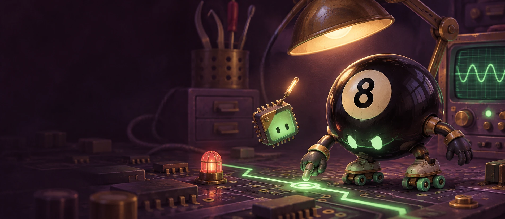
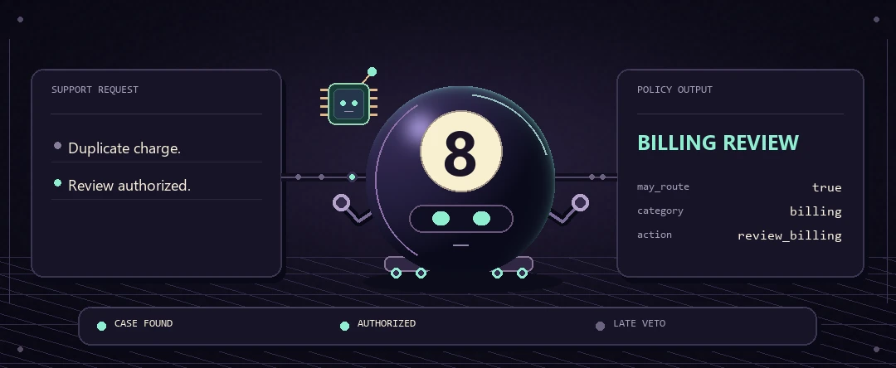
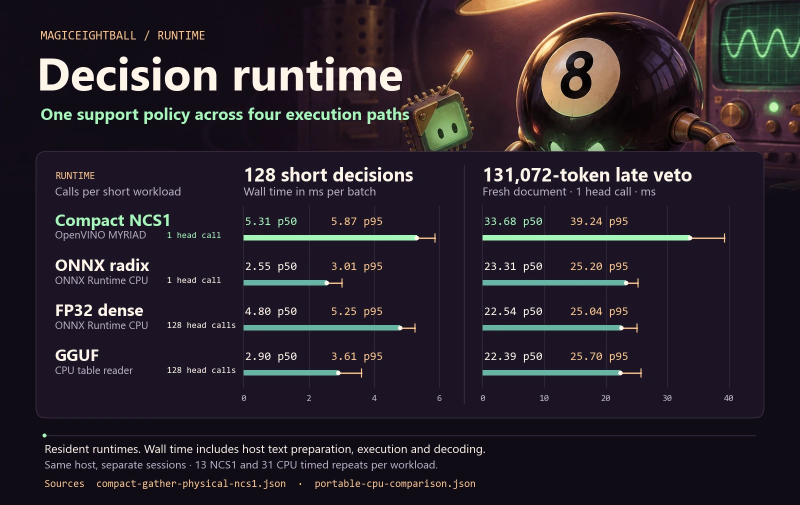
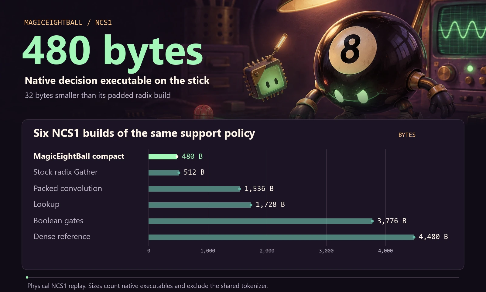
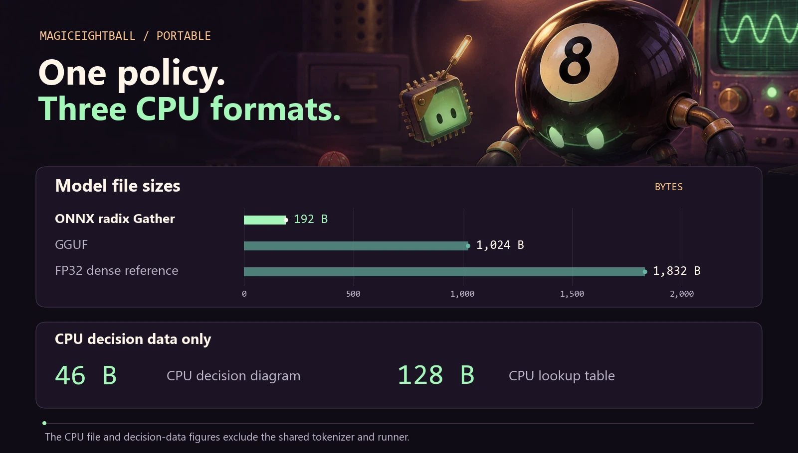

MagicEightBall
A Boolean decision engine that returns a yes or no, a category, and a proposed action. The host reads up to 131,072 Needle 3 tokens and extracts evidence. The original Intel Neural Compute Stick can run the 480-byte decision head.

Replay a decision
Compare the expected decision with the recorded CPU and physical NCS1 results. The three industry simulations matched all 27 authored cases and 384 Boolean assignments on both runtimes. All 15 cases expected to produce no action passed.
Loading recorded decisions…

Choose a format
Sizes cover the decision artifacts. The tokenizer, host code, and runtime have separate sizes.
Set up the original stickMeasured runtime comparisons
All four formats matched 128 support-policy assignments and rejected 131,073 tokens. Timings include host text preparation and head execution on the same Intel Core i7-12650H host. The runtime versions and repeat counts are in the reports.
| Runtime | 128 short decisions, p50 / p95 | 131,072-token late veto, p50 / p95 |
|---|---|---|
| Native NCS1 | 5.31 / 5.87 ms | 33.68 / 39.24 ms |
| ONNX radix CPU | 2.55 / 3.01 ms | 23.31 / 25.20 ms |
| ONNX FP32 CPU | 4.80 / 5.25 ms | 22.54 / 25.04 ms |
| GGUF CPU | 2.90 / 3.61 ms | 22.39 / 25.70 ms |

Model size comparisons




Published peer examples use different tasks and count different parts of the runtime. See the published-model chart.